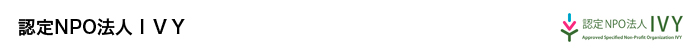
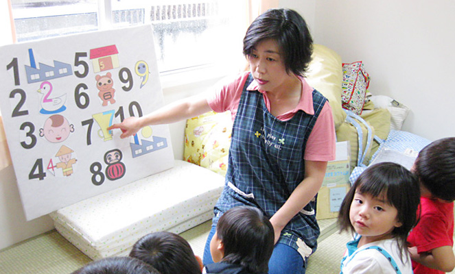

3年間の活動報告

「世界中の誰もが人間らしく生きられる社会」をビジョンに掲げ、紛争、災害、貧困等、世界中の困難な状況にある個人と地域の自立のための支援を行っています。カンボジアでは93年から特に農村部の貧困削減、シリア・イラクでは難民の子どもたちのための初等教育支援、東日本大震災では被災地、被災者に対し、雇用につながる支援を通じて復興や生活再建に貢献しています。
ホームページ
http://www.ivyivy.org
フォトレポート


3年間の活動のまとめ
年間のテーマ：被災地に仕事を！ローカルパワープロジェクト
1．保育園を通じた雇用支援
- （1）
- 福島から避難している母子専用の「あいびぃ保育園」を通じた自立支援
【背景】
山形県は福島県からの避難者は2011年7月～2013年8月までは全国一位でその大半がお母さんと子どもたちだったが、避難の長期化によって経済的に困窮しており、避難生活の自立と持続のためには避難母子専用の保育園が必要とされていた。
【達成率】
母親166人の就労就活に貢献できた。
- （2）
- 津波、地震により全壊した保育園の再建後の運営支援
【背景】
宮城県沿岸部で27の保育施設が全壊。母親の職場復帰にも支障が生じた。そこで特に行政の支援が届きにくい認可外保育園の再建を支援することにより、地域全体の待機児童を減らすことが必要とされていた。
【達成率】
2年間で延べ3か所の再建を支援した。10名以上の保育士の雇用の場ともなった。
2．コミュニティビジネス型NPO支援
- 【背景】
震災前の気仙沼市のNPO法人数は13と少なく、若い世代の参加も少なかった。そこで20～30代の若者によるコミュニティビジネス型NPOの設立支援を通じ、雇用と地元の福祉の向上を図ることをめざした。
【達成率】
2年間で延べ2法人を支援した。雇用者は延べ19人、高齢者サービスの利用者約11000人に貢献できた。
3．起業支援
- 【背景】
12年4月の宮城県三陸沿岸部の有効求人倍率：石巻市0.77倍、気仙沼市0.6倍と厳しい。また、サービス業、建設土木業で人手不足、事務や製造業で求職超となるなど、雇用のミスマッチが起きていた。そこで地元出身の若者目線で新しい職場を創出することを通じて、若者の流出を防ぎ、地元の活性化を図ることをめざした。
【達成率】
2年間で2事業所を支援した＊支援した2事業所のうち、2013年度に支援したボアラズは1年後に株式会社となって、事業を継続させている。
3年間の活動で生まれた変化やエピソード
【3年間を通しての気づき】事業について
- 成功の法則1
- IVYが直接運営に関与できた事業所についてはうまくいった。
- 成功の法則2
- 成功した経営者には事務能力の資質があり、文書作成、帳簿管理等の作業がまじめだった。